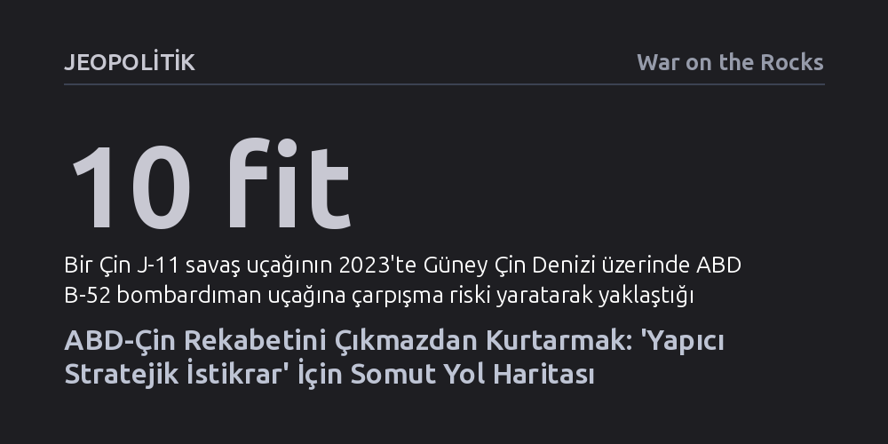

JEOPOLITIK · War on the Rocks · 2026-10-13
ABD ve Çin arasındaki sonu gelmez stratejik rekabet iki ülkeyi felaket getirecek bir çatışmaya sürüklüyor; kalıcı denge ancak karşılıklı itidali öngören 'yapıcı stratejik istikrar' modeliyle kurulabilir. Makale, askeri tatbikatlardan teknoloji kısıtlamalarına uzanan dört aşamalı somut bir uzlaşma mimarisi sunuyor.
Süper güçler arasındaki gerilimin kaçınılmaz bir savaşa varmak zorunda olmadığını, karşılıklı güvensizliği adım adım azaltacak gerçekçi ve uygulanabilir bir uzlaşma zemini bulunduğunu gösteriyor.

2010'lu yıllarda ABD ordusunun desteğiyle düzenlenen kapalı kapılar ardındaki bir kriz simülasyonunda yaşananlar, iki süper gücün birbirinin niyetlerini nasıl yanlış okuduğunu çarpıcı biçimde özetliyordu. Amerikalı yetkililer, Filipinler ile Çin arasındaki deniz ihtilafı bölgesinden bir uçak gemisini geri çekerek Pekin'e iyi niyetli bir itidal mesajı verdiklerini düşündüler. Oysa Çinli muhatapları tam tersini gördü: Uçak gemisinin saldırıya açık hedef olmaktan çıkıp daha korunaklı bir mesafeden taarruza hazırlandığına inanarak derin bir alarma kapıldılar.
Bu simülasyon, derinleşen güvensizlik ortamında rahatlatıcı adımların bile nasıl varoluşsal bir tehdit gibi algılanabildiğini ortaya koyuyor. Neredeyse on yıldır Washington'ın dış politikasını belirleyen 'stratejik rekabet' doktrini, tam da bu güvenlik ikilemini kurumsallaştırdı. Askeri planlamadan ticaret ve yatırımlara, teknoloji kısıtlamalarından bilimsel ve kültürel temaslara kadar iki ülke ilişkilerindeki hemen her alan güvenlikleştirildi.
Bu yaklaşımın en tehlikeli yanı, rekabeti bir amaca ulaşma aracı değil, kendi başına bir amaç haline getirmesidir. Taraflardan birinin teknoloji ya da ticarette attığı her adım karşı tarafta yeni kısıtlamaları tetikliyor; askeri modernizasyon daha büyük bütçeleri ve yığınakları meşrulaştırıyor. Ancak hiç kimse şu can alıcı sorunun cevabını vermiyor: Bu sınırsız yarışın sonunda iki ülkeyi nasıl istikrarlı ve sürdürülebilir bir ilişki bekliyor?
Stratejik rekabet söylemi, tarafların hem birbirlerinin niyetlerini hem de kendi güç kapasitelerini abartmalarına yol açıyor. Çin şüphesiz devasa bir ekonomik ve askeri güçtür; kritik minerallere ihracat yasağı getirebiliyor ya da siber uzayda Amerikan kritik altyapılarına sızabiliyor. Ancak bu durum, Pekin'in nükleer savaş senaryoları haricinde ABD için varoluşsal bir tehdit oluşturduğu ya da küresel hakimiyet kurabileceği anlamına gelmiyor.
Çin, küresel liderlik iddiasının önünde aşılması son derece güç yapısal engellerle karşı karşıya bulunuyor. Hızla yaşlanan nüfus, yüksek borç yükü, gayrimenkul sektöründeki kriz ve yavaşlayan verimlilik büyümesini frenliyor. Dahası, Batı'daki gibi geniş ittifak ağlarına, denizaşırı üslere veya küresel cazibesi olan bir ideolojiye sahip değil. Batı Pasifik'te bölgesel bir denge unsuru olsa da küresel ölçekte ABD'nin yerini alacak askeri ve lojistik kapasiteye ulaşması öngörülebilir gelecekte mümkün görünmüyor.
Benzer sınırlamalar ABD için de geçerlidir. Artan bütçe açıkları, derin siyasi kutuplaşma, müttefiklerin giderek daha bağımsız hareket etmesi ve Amerikan kamuoyunun uzun savaşlara duyduğu direnç, Washington'ın mutlak hegemonyasını sürdürmesini imkânsız kılıyor. Buna rağmen savunma harcamalarının sivil refah ve altyapı aleyhine sürekli artırılması, Amerika'nın uzun vadeli iç rekabet gücünü zayıflatıyor.
ABD'nin 2026 Ulusal Savunma Stratejisi, Washington'ın Çin'i 'ezmeyi, boğmayı veya aşağılamayı' hedeflemediğini ve Pasifik'te onurlu bir barış aradığını öne sürüyor. Ancak aynı belge, Pekin'i Birinci Ada Zinciri boyunca sıkı bir askeri önleme duvarıyla çevrelemeyi de talep ediyor. Retorikteki ılımlı havaya rağmen sahadaki mantık hâlâ sıfır toplamlı bir üstünlük kurma arayışından ibaret kalıyor.
Eskiye dönüp hiçbir siyasi sınır koymayan saf bir angajman ve riskten korunma politikasına sığınmak da çözüm değil. İhtiyaç duyulan şey, iki liderin son zirvelerde telaffuz ettiği 'yapıcı stratejik istikrar' kavramının içini doldurmaktır. Bu kavram, iki gücün de birbirini günlük hayatta bir ölüm-kalım tehdidi olarak görmeyi bırakmasını ve karşılıklı ekonomik ve stratejik bağımlılığın getirdiği mecburiyeti kabul etmesini gerektiriyor.
Bu istikrar tek seferlik bir zirveyle ya da içi boş iyi niyet beyanlarıyla inşa edilemez. Tarafların birbirlerinin kırmızı çizgilerini sınamak yerine, niyetlerini somut davranışlar üzerinden test edeceği, geri döndürülebilir ve aşamalı adımlarla ilerleyen bir süreç kurgulanmalıdır. Amaç sadece savaştan kaçınmak değil; yapay zeka yönetişimi, iklim krizi ve nükleer riskler gibi ortak varoluşsal tehditlerde zorunlu iş birliği zeminini korumaktır.
Süreç dört birbirini tamamlayan aşamada ilerlemelidir: siyasi iletişim, operasyonel güvence, karşılıklı itidal ve kurumsallaşma. İlk adım, Tayvan konusunda net siyasi çizgilerin çekilmesidir. Washington, Tayvan'ın bağımsızlık ilanına açıkça karşı çıkacağını, adaya muharip birlik konuşlandırmayacağını ve tek taraflı statüko değişikliklerine direneceğini taahhüt etmelidir. Pekin ise barışçıl birleşmenin öncelikli hedefi olduğunu, belirlenmiş bir işgal takvimi bulunmadığını beyan ederek ada çevresindeki askeri baskısını azaltmalıdır.
İkinci aşamada ordular arasındaki tehlikeli sürtüşmelere odaklanılmalıdır. 2023'te bir Çin avcı uçağının Amerikan bombardıman uçağına gece karanlığında neredeyse 10 fit mesafeye kadar yaklaşması gibi ölümcül kazalar, mevcut iletişim kanallarının yetersizliğini gösteriyor. Taraflar, acil durum hatlarını ve tatbikat bildirimlerini test edecek 90 günlük bir deneme süresi başlatmalı; Washington da Çin kıyılarındaki yakın keşif uçuşlarını gözden geçirmelidir.
Bu deneme süresi başarıyla tamamlandığında, üçüncü aşama olan karşılıklı kısıtlamalara geçilebilir. ABD yakın keşif uçuşlarını seyrekleştirirken Çin de Tayvan Boğazı'ndaki kuşatma tatbikatlarını ve orta hat ihlallerini kısmalıdır. Benzer şekilde ekonomik alanda, ulusal güvenliğe doğrudan katkısı olmayan çip ve biyoteknoloji ihracat kısıtlamaları daraltılmalı, Pekin de kritik mineral kısıtlamalarını hafifletmelidir. Süreç nihayetinde, kriz yönetimini kurumsallaştıran bağlayıcı anlaşmalarla tamamlanmalıdır.